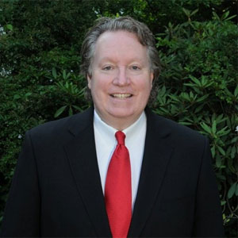

About Me
Dear District 3:
I am Michael Smith and I am currently serving my first term as our representative on the Westchester County Board of Legislators. The district is comprised of all or parts of Mount Pleasant, Pleasantville, North Castle, Sleepy Hollow, Greenburgh and Briarcliff Manor.
It is my belief that our area deserves a representative whose first allegiance is to our communities and neighborhoods, someone who will work tirelessly to protect them and make them better. That is why I ran for office. Each and every day, that is what I keep my sights set on at the Legislature.
I love Westchester. My wife Marie and I have raised our two kids here. As a 30 plus-year resident, I am concerned about our future. It’s well documented that Westchester has the highest property taxes in the United States. Where does the money go? Is county government giving us value in return for our hard earned tax dollars?
The answer is "no" when you look at what has been coming out of the Board of Legislators over the years. At a time when the focus needs to be on jobs, attracting new businesses, and spending every dollar wisely so that essential services can be preserved, the board has chosen to instead focus on issues such as adjusting Playland entrance fees midyear or trying to pass laws that would restrict your freedom of speech.
County Executive Rob Astorino has worked hard to put Westchester back on a firm financial footing. Yet the Board’s majority takes every opportunity possible to “poke him in the eyes.” This is not what legislators are elected to do. My mindset is clear: focus on the people and their needs, especially during the current economic constraints.
That is also why I have taken the necessary hard-line in regards to the affordable housing settlement signed in 2009, which threatens to have Washington usurp our local property rights. The County needs to stand up to the federal government and tell them to respect the original terms of the settlement. County Executive Astorino has stood firm while some of the members of the Board of Legislators have chosen to sue the county executive and cost the hard-working taxpayers money that could be used to fund essential safety projects such as road and bridge repairs. What happened to trying to work together?
My background as the chief financial officer of a prominent Westchester business and as a former president and six year member of the Valhalla Board of Education has helped to give the Board a different perspective. As a school board member, I saw the problems local districts face. As president of the Board, I made sure to keep taxes low, while providing the best possible education for our children.
Also during my time at Valhalla, Board meetings were filmed for the very first time, making transparency and communication between residents and their school board as open as ever. Over time I expect to bring increased fiscal responsibility and open communication to the Board of Legislators as well.
Now it is time to look forward.
So far in my term, I have provided District 3 with an independent voice on the Board. I am not afraid to speak up, even when I am in the singular minority.
As I speak with many people throughout our district, I understand the difficulties our residents are facing. Students cannot afford to live here once they graduate. Families are having a difficult time raising their children and paying their tax bills. And our senior citizens just cannot keep up with the ever-increasing taxes, especially those on fixed incomes. The out-of-control taxes affect every one of us. It is time we do something about it.
So what did I do the first few weeks into my term? I rejected a pension that would have cost taxpayers additional and unnecessary tax dollars. When one is working a part-time job as a legislator, a pension should not even be a question. I declined to be reimbursed for my travels to and from Board meetings as well. Further, the $20,000 that the legislators appropriate in their budget for food (for themselves) on Board meeting nights is an atrocity. As a Westchester County taxpayer myself, I am offended. Simple common sense goes a long way to saving money, especially money belonging to the taxpayers.
Simply put, I chafe at being called a politician. I have been in business all my life. I often tell residents that I am merely “the guy who lives next door.” I decided to run for the County Board because I too was fed up with the same business-as-usual approach taken by the County Board. As a citizen, I decided to take a stand and with your support, we can continue to make a difference.
Thank you for visiting my site. Have a question for me? Want to tell me how you feel about an issue? Email me at Smith@westchesterlegislators.com or call me at 914-995-2847. My legislative page is http://westchesterlegislators.com/district-3.html. I appreciate all the feedback.